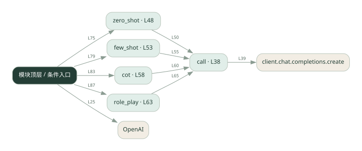

1-13 · 全课程第 13 节
提示词策略对比
prompt_eng.py
源码快照 1f6878a691b0 · 静态解析 · 2026-09-10
01 / 要完成的事
对同类问题尝试直接提问、示例、分步提示和角色提示。
02 / 为什么要做
提示内容改变模型收到的任务约束，需要通过对照看效果。
03 / 当前代码状态
存在外部服务或模型依赖；执行前需按源文件配置依赖和凭据，可能联网或产生 API 费用。 本次只做静态解析，没有运行练习，也没有替你填写或修改原代码。
04 / 调用图
打开大图 ↗实线：源码中的直接调用；虚线：函数引用/注册、动态调用或按方法名推断的候选。L 是调用所在源码行号。箭头不表示执行顺序或每次必经；分支、循环、异步调度及框架内部调用需结合源码。灰色是外部/未解析目标，橙色是动态分发；省略 print、len 和常规容器操作以减少干扰。孤立函数可能尚未接入。

先从 模块入口 出发，沿箭头找到本文件函数，再查看外部调用或动态分发。右侧调用清单保留所有静态调用点，能回到原文件逐行对照。
05 / 函数定位
| 函数 / 定义行 | 职责（源码注释） | 内部调用 |
|---|---|---|
callL38 | 以源码函数体为准；下列调用展示其依赖。 | client.chat.completions.create |
zero_shotL48 | 直接问，不给任何提示 | call |
few_shotL53 | 先给一个解好的例题，让模型照着学 | call |
cotL58 | 加一句「一步步思考」，逼模型展示推理过程 | call |
role_playL63 | 给一个角色身份，改变严谨度和风格 | call |
这样做的优点
修改成本低，能快速比较表达方式。
代价与局限
单次好结果可能是偶然；更长提示增加成本，也可能限制过头。
适用场景
有固定评价标准的提示词实验。
不宜直接照搬
没有测试集却宣称某种提示永远更好。
动手检验理解
用同一组问题比较四种提示，并记录正确率和输出长度。
有未实现位置时先预测，再补齐验证。能启动不等于逻辑正确。
查看全部 24 个静态调用 / 引用点
| 调用方 | 目标 | 源码行 | 类型 |
|---|---|---|---|
| <模块入口> | OpenAI | 25 | 调用 |
| call | client.chat.completions.create | 39 | 调用 |
| zero_shot | call | 50 | 调用 |
| few_shot | call | 55 | 调用 |
| cot | call | 60 | 调用 |
| role_play | call | 65 | 调用 |
| <模块入口> | print | 70 | 调用 |
| <模块入口> | print | 71 | 调用 |
| <模块入口> | print | 72 | 调用 |
| <模块入口> | print | 74 | 调用 |
| <模块入口> | print | 75 | 调用 |
| <模块入口> | zero_shot | 75 | 调用 |
| <模块入口> | print | 77 | 调用 |
| <模块入口> | print | 78 | 调用 |
| <模块入口> | print | 79 | 调用 |
| <模块入口> | few_shot | 79 | 调用 |
| <模块入口> | print | 81 | 调用 |
| <模块入口> | print | 82 | 调用 |
| <模块入口> | print | 83 | 调用 |
| <模块入口> | cot | 83 | 调用 |
| <模块入口> | print | 85 | 调用 |
| <模块入口> | print | 86 | 调用 |
| <模块入口> | print | 87 | 调用 |
| <模块入口> | role_play | 87 | 调用 |